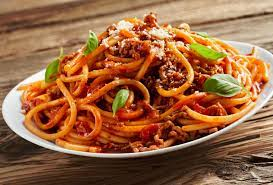

Pâtes bolognaise

Description
Les spaghettis à la sauce bolognaise, on ne vous présente plus cette recette.
Ingrédients
- 20cl de bouillon
- 500g de purée de tomate
- 50g d'oignon haché
- 500g de pâtes
Étapes
- Tailler le lard en petits dès.
- Faire revenir le lard avec les légumes dans l'huile d'olive.
- Ajouter la viande de boeuf.
- Dès que la viande est bien colorée ajouter le vin rouge.